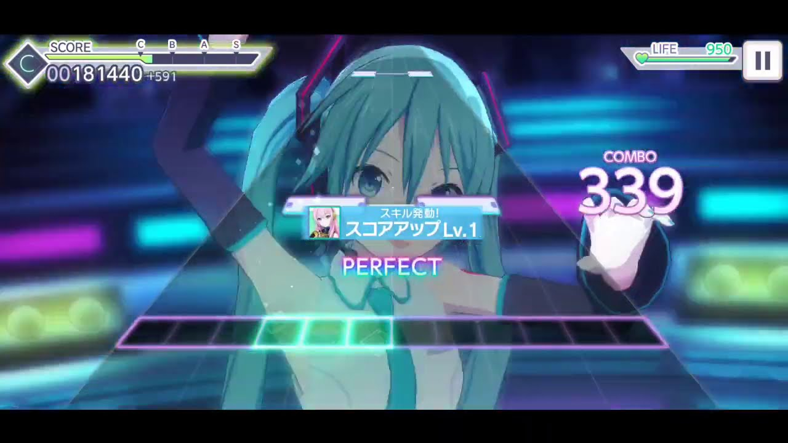
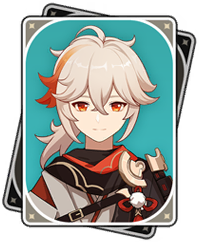
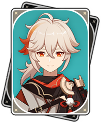

Project Sekai

Project Sekai is by far my favorite mobile rhythm game! It has a nice combination of catchy and nostalgic songs, cute and memorable characters, and a difficult yet fun rhythm game mechanics. I started playing Project Sekai when beta testing first became available, and once it came out in the Japanese Apple Store, I immediately downloaded the game.
Although I am not a huge fan of gacha games, especially because of my non-existent luck pulling the characters I want, I love the game. In many other rhythm games, you are restricted by some sort of stamina system, and in some games, you can only play 4-5 songs every 12 hours. Project Sekai has a system where you can play as many songs as you want, and the stamina (called energy) increases the rewards you get for playing. As someone who enjoys the game more for the rhythm aspect, this is a feature I hope will become more popular in other games!
Gameplay
The game mechanics are relatively simple and similar to another arcade rhythm game called Chunithm. There is a horizontal playing space at the bottom of the screen (although you can tap the space above this bar). There are 3 types of notes, tap, hold/slide, and flick, which are denoted by different colors: white, green, and red.
There are options to change the volume of different SFX and VFX, and you can even turn off the skill pop ups that may distract you while playing. Personally, I turn most visual effects off, including the 3D music video, because I like to get rid of any distractions.
Characters
I usually don't pay attention to characters in rhythm gacha games, solely because I don't want to get too attached to a character and wind up never getting their card. However, some of the designs and character voices are too good to pass, so here are some of my favorite characters and the cards I have gotten of them!
 
